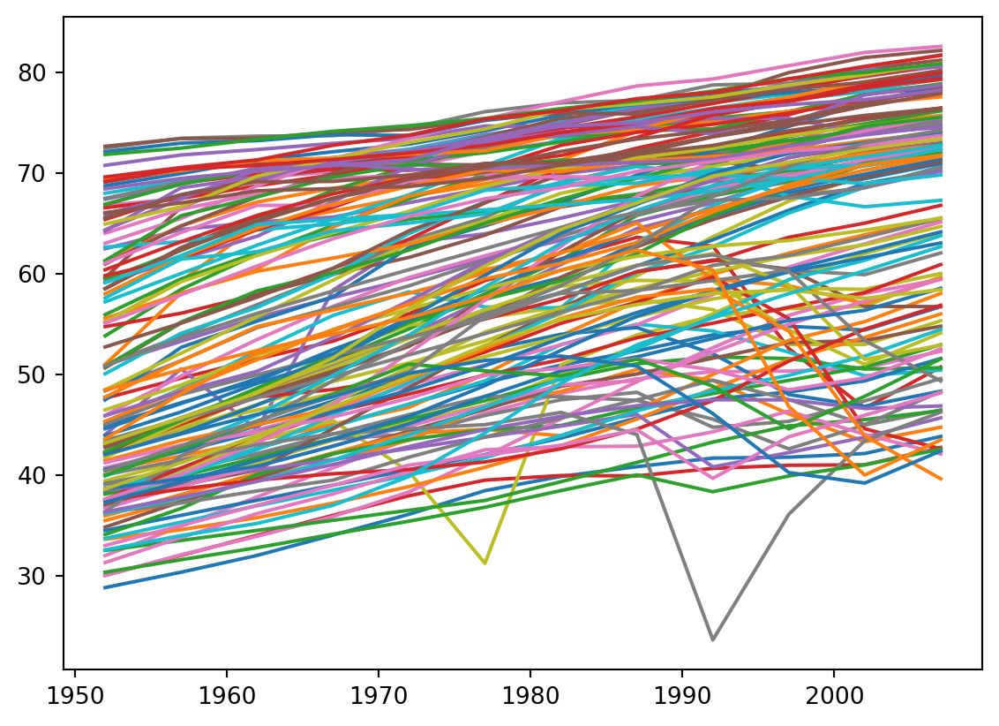
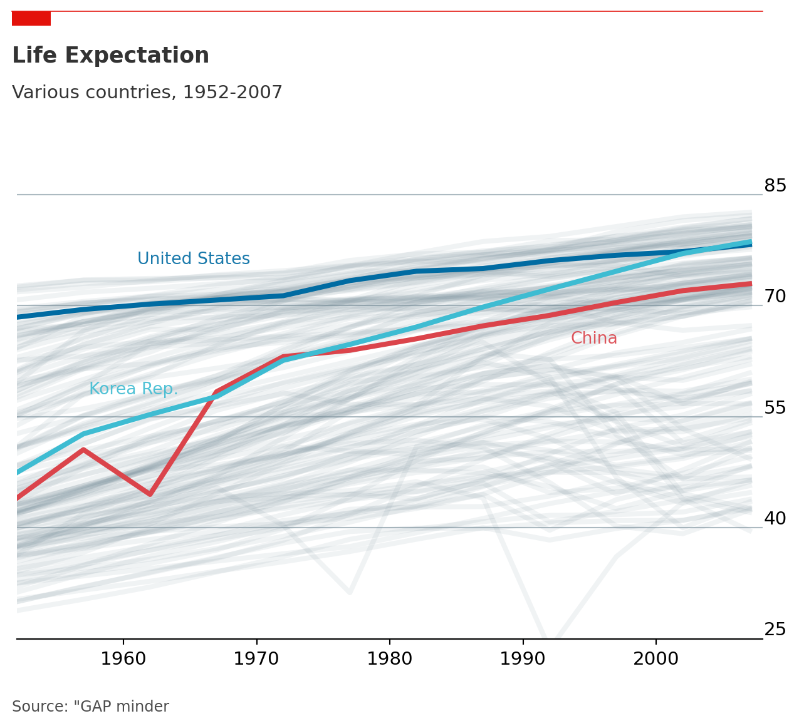

import matplotlib.pyplot as plt
import pandas as pd
import numpy as np
gapminder = pd.read_csv("https://raw.githubusercontent.com/OHI-Science/data-science-training/master/data/gapminder.csv")Economist는 영국에서 발간하는 경제 주간지로 전세계에 일어나고 있는 뉴스를 전달합니다. 뉴스를 전달하는 과정에서 여러가지 차트를 제시하곤 하는데, 설득력 있게 전달하는 방식을 matplotlib에서 적용을 해보고자 합니다.
예시로 사용할 데이터는 한스 로슬링 박사님이 사용하셨던 gap minder 데이터를 사용해보고자 합니다.
우선 필요한 패키지를 불러옵니다.
기본 그래프 출력하기
matplotlib에서 기본적으로 출력할 수 있는 방식은 다음과 같습니다. seaborn을 쓰면 조금 다르겠지만, 크게 다르지 않습니다.
countries = ['United Kingdom', 'United States', 'France', 'China', 'Japan', 'Korea Rep.', 'Ghana', 'Somalia', 'South Africa',]
data = gapminder.loc[gapminder.country.isin(countries)]
fig, ax = plt.subplots(1, 1)
for country, df in gapminder.groupby("country"):
ax.plot(df["year"], df["lifeExp"], label=country)
plt.show()
보시면 알겠지만, 너무 많은 선이 노출되어 있어서 무엇을 전달하려고 하는지 전달이 되지 않습니다. 전반적으로 기대 수명이 개선 되고 있는 것을 확인할 수 있습니다만, 너무 복잡해서 무엇을 전달하고자 하는지 이해가 되지 않습니다.
스타일 적용하기
Economist에서 방식은 메시지를 집중하는 방식을 사용합니다.
앞으로 진행해보고자 하는 것을 정리하자면
- 비교하고자 하는 자료를 강조하고 그 외의 자료는 간략하게
- 세로축과 보조선을 제외하기
- 가로선을 설정하기
- 태그 넣기
정도 입니다. 아래에 그 방식을 따라하면 됩니다.
# 플롯 설정하기
fig, ax = plt.subplots(figsize=(8,6))
# 1. 보조선 그리기
# zorder를 통해서 보여지는 순서를 지정할 수 있습니다.
ax.yaxis.set_ticks(range(25, 100, 15))
ax.grid(which="major", axis='y', color='#758D99', alpha=0.6, zorder=1, )
# 불필요한 테두리 제거하기
ax.spines[['top','right','left']].set_visible(False)
# 축 눈금 스타일 조정하기
ax.set_yticklabels(ax.get_yticklabels(), # Set labels again
ha = 'right', # Set horizontal alignment to right
verticalalignment='bottom') # Set vertical alignment to make labels on top of gridline
ax.yaxis.set_tick_params(pad=11, # Pad tick labels so they don't go over y-axis
labeltop=True, # Put x-axis labels on top
labelbottom=False, # Set no x-axis labels on bottom
bottom=False, # Set no ticks on bottom
labelsize=11) # Set tick label size
ax.xaxis.set_tick_params(labelsize=11) # Set tick label size
# Economist 스타일 넣기
ax.plot([0.12, .9], # Set width of line
[.98, .98], # Set height of line
transform=fig.transFigure, # Set location relative to plot
clip_on=False,
color='#E3120B',
linewidth=.6)
ax.add_patch(plt.Rectangle((0.12,.98), # Set location of rectangle by lower left corder
0.04, # Width of rectangle
-0.02, # Height of rectangle. Negative so it goes down.
facecolor='#E3120B',
transform=fig.transFigure,
clip_on=False,
linewidth = 0))
# Plot data
# Loop through country names and plot each one.
for name, df in gapminder.groupby("country"):
ax.plot(df['year'],
df['lifeExp'],
color='#758D99',
alpha=0.1,
linewidth=3)
# Plot US and China separately
ax.plot(data[data['country'] == 'United States']['year'],
data[data['country'] == 'United States']['lifeExp'],
color='#006BA2',
linewidth=3)
ax.plot(data[data['country'] == 'China']['year'],
data[data['country'] == 'China']['lifeExp'],
color='#DB444B',
linewidth=3)
ax.plot(data[data['country'] == 'Korea Rep.']['year'],
data[data['country'] == 'Korea Rep.']['lifeExp'],
color='#3EBCD2',
linewidth=3)
# y 범위 설정하기
ax.set_ylim(25, 100)
# x 범위 설정하기
ax.set_xlim(1952, 2008)
# 레이블 넣기
ax.text(x=.25, y=.63, s='United States', transform=fig.transFigure, size=10, alpha=.9, color="#006BA2")
ax.text(x=.7, y=.52, s='China', transform=fig.transFigure, size=10, alpha=.9, color="#DB444B")
ax.text(x=.2, y=.45, s='Korea Rep.', transform=fig.transFigure, size=10, alpha=.9, color="#3EBCD2")
# 타이틀과 서브타이틀 넣기
ax.text(x=0.12, y=.91, s="Life Expectation", transform=fig.transFigure, ha='left', fontsize=13, weight='bold', alpha=.8)
ax.text(x=0.12, y=.86, s="Various countries, 1952-2007", transform=fig.transFigure, ha='left', fontsize=11, alpha=.8)
# 출처 넣기
ax.text(x=0.12, y=0.01, s="""Source: "GAP minder""", transform=fig.transFigure, ha='left', fontsize=9, alpha=.7)
plt.savefig("life_exp.png")
plt.show()